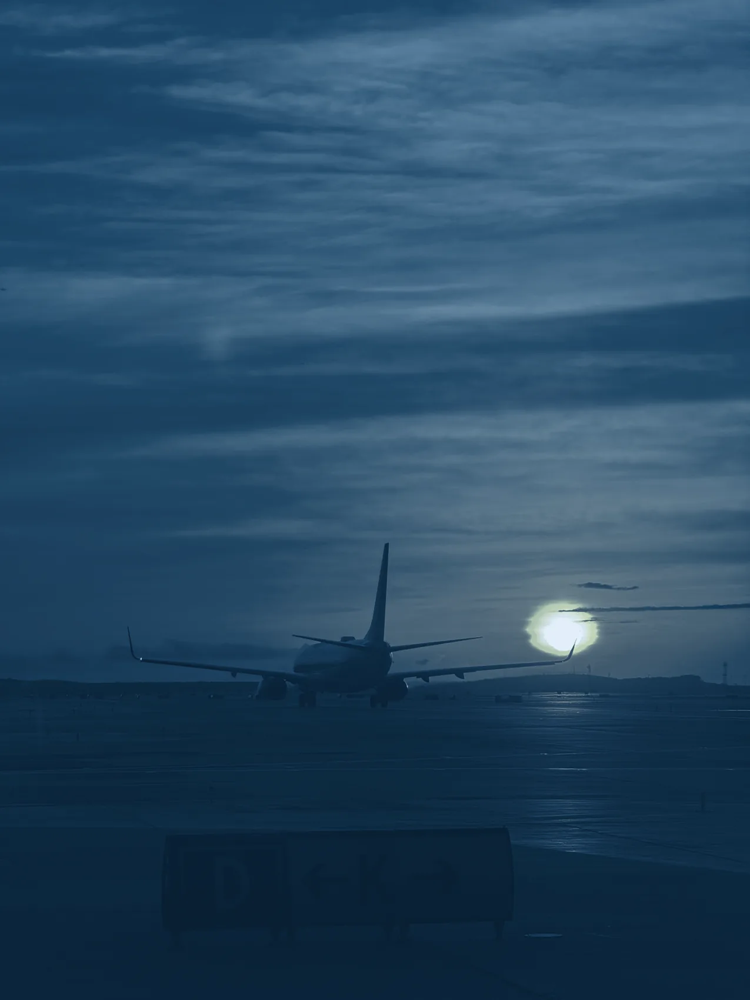

100%

Six checkride guides in one place — every Area of Operation, every Task, every element, with the FAA reference behind each one. Take your time, and good luck on the ride.
This is a study guide written to help you prepare — it is not the authority. Always verify against the current ACS, the regulations and the FAA handbooks before you fly or teach.